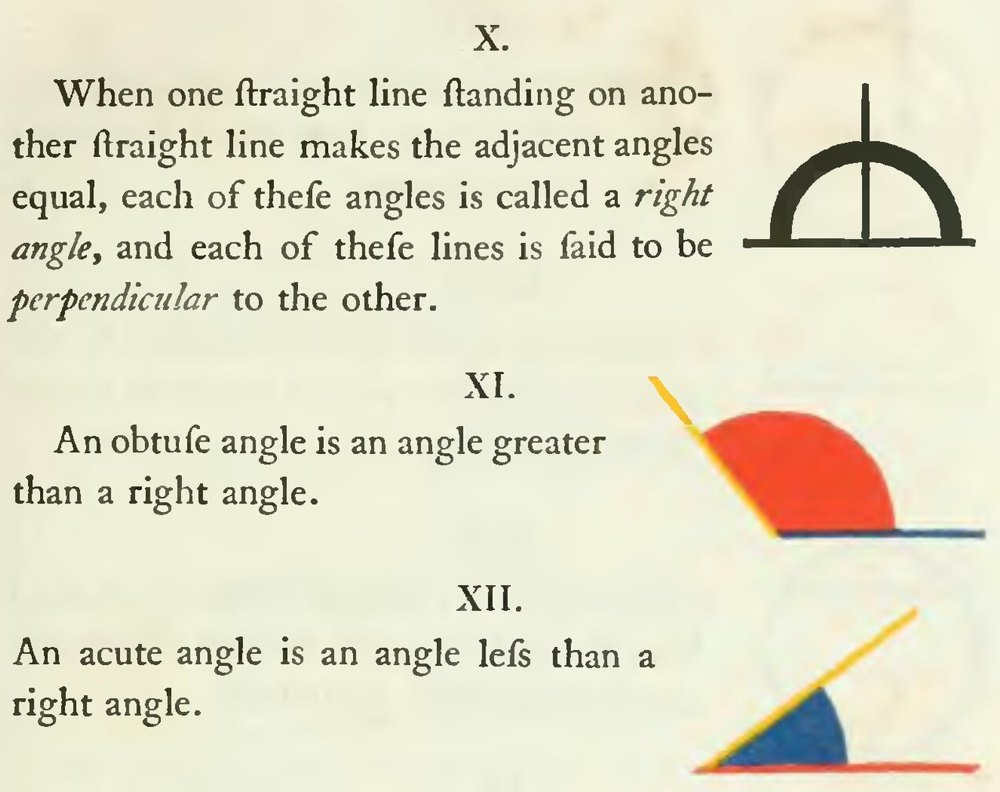
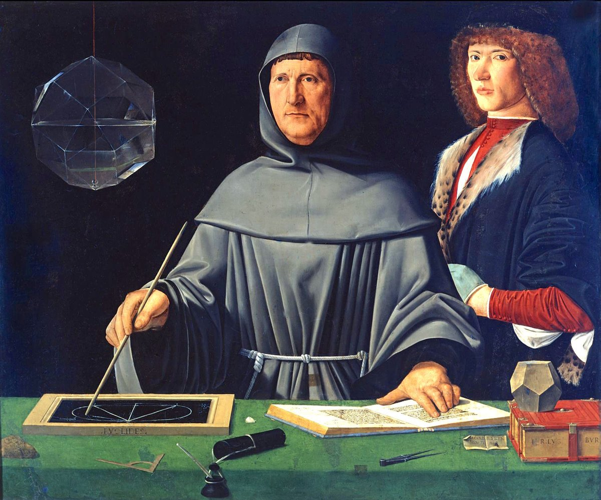
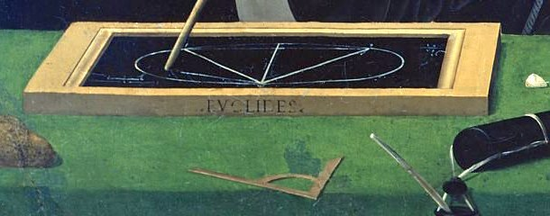

Angles
MA.K12.MTR.2.1 Show math in many ways. MTR.5.1 Use patterns and structure. MTR.6.1 Check that answers make sense.
Today: name the vertex and the rays of an angle, and use a square corner to tell if an angle is less than, equal to, or greater than a right angle. Dimensions Math 3B, Chapter 12, Lesson 2 · Angles

Alexandria, Egypt · about 300 BC

What is an angle, and how can you tell its size?
Two rays meet at one point. The opening between them is the angle.
You will…
- Name the vertex and the two rays of an angle.
- Check an angle with a square corner.
- Tell if an angle is less than, equal to, or greater than a right angle.
Why Euclid?
The big picture was painted in Italy in 1495, about 1,800 years after Euclid. A teacher named Luca Pacioli draws on a slate with a pointer. The frame of the slate has a name on it: EVCLIDES, the old way to write Euclid. The small picture is a close-up of the table. Next to the slate lies a set square: a flat triangle with one square corner.


Near the start of his book, Euclid explains angles. He sorts them the same way you will today: an angle that makes a square corner is a right angle. Some angles are less than a right angle, and some are greater. For 2,000 years, teachers like Pacioli taught from Euclid's book.
Today's math: name the parts of an angle, then check its size with a square corner.
Shapes have 3 sides, 4 sides, and more. Warm up with × 3 and × 4 facts. Type each answer, then check. You can fix any answer and check again.
Sides and corners
A corner is where two sides of a shape meet. Count the sides and the corners of this house shape.
Think: The Pinned Strips
🔨 Do · ✏️ WriteEuclid's students pin two straight strips together at one end, so one strip can turn. What changes when it turns?
Two strips pinned together with a gold pin. The navy strip stays still. The green strip turns when you drag its round green handle. A set square sits behind them. Its corner is a square corner.
Open it a little
Drag the round green handle up a little, so the strips open a small way.
Open it to a square corner
Drag the green handle until the green strip lies on the set square's straight-up edge.
Open it all the way
Keep dragging the green handle until the two strips make one straight line.
What changed?
Tell what you saw
You made angles. The strips stayed the same length. Only the opening changed. A square corner is a right angle. One straight line is a straight angle.
The parts of an angle
- Vertex: the point where the two sides meet.
- Ray: each side of an angle is a ray. A ray starts at the vertex and goes straight out.
- Angle: the opening between the two rays. A wider opening is a bigger angle. Even a tiny opening is still an angle.
Check it with a square corner
A right angle is a square corner, like the corner of a page or a window. Put the square corner of a set square on the vertex, with one edge along a ray. Then look at the other ray:
- It hides under the set square: the angle is less than a right angle.
- It lies right on the edge: the angle is a right angle.
- It sticks out past the set square: the angle is greater than a right angle.
When the two rays make one straight line, the angle is a straight angle.
Watch out: longer rays do not make a bigger angle. Only the opening matters.
Four ways to stay on track
Your Turn: Label and Check
🔨 Do · ✏️ WriteEuclid's student drew an angle on a slate. Label its parts. Then check its size with the set square.
An angle: a navy ray and a green ray meet at a dot. Three empty label spots point to its parts. After you label them, a set square appears, like the one on Pacioli's table.
Label the parts
Drag each label to the spot that points to its part: one vertex and two rays.
Put the square corner on the vertex
Drag the set square so its square corner lands on the vertex dot.
Name the angle
Look at the green ray. Drag the card that tells the size of this angle into the box.
Angle hunt
Ben Looks at the Long Rays
🔨 Do · ✏️ WriteBen looks at angle P and angle Q. He says, "Angle P is greater, because its rays are so much longer."
Angle P has long rays and a small opening. Angle Q has short rays and a wide opening. You can stretch Q's red ray, and you can move angle Q by its vertex.
Stretch a ray
Drag the red handle at the end of angle Q's red ray out, so the ray gets much longer.
Put Q on top of P
Drag angle Q by its vertex, the dot with the gold ring, onto angle P's vertex.
Which is greater?
Help Ben
Mia's Turned Corner
🔨 Do · ✏️ WriteA kite has this corner. Mia says, "It can't be a right angle. Neither ray lies flat along the bottom." Euclid wrote that all right angles are equal, no matter which way they point.
Mia's angle, turned so neither ray lies flat. The set square sits off to the side. Its round ⟳ handle turns it.
Put the square corner on the vertex
Drag the set square so its square corner lands on the vertex dot.
Turn the set square
Drag the round ⟳ handle to turn the set square until both edges lie along the rays.
Name the angle
Drag the card that tells the size of Mia's angle into the box.
Help Mia
Kai's Two Sticks
🔨 Do · ✏️ WriteKai lays two sticks on the ground near each other. He says, "These two sticks make an angle." But the sticks do not touch.
A navy stick and a green stick with a gap between them. The loose end of the green stick has a round green handle.
Close the gap
Drag the green handle onto the left end of the navy stick, so the sticks touch.
Find the vertex
Tap the point where the two sticks meet.
Help Kai
On Your Own: A Wide Angle
🔨 Do · ✏️ WriteMake an angle that is greater than a right angle, but not a straight angle. Then label it.
Grid paper with an angle. The navy ray stays still. The green ray turns when you drag its round green handle.
Make a wide angle
Drag the round green handle to open the angle wider than a square corner, but not all the way to a straight line.
Check it
Press 📐 Check with the square corner.
Label it
Drag each label to its spot: one vertex and two rays.
Tell how you know
Euclid's Right Angle Test
🔨 DoOne line stands on a straight line. It makes two angles side by side: a green angle and a red angle.
A straight navy line with a second line standing on it. The standing line has a round gold handle. This is Euclid's test from the old page below.
Problem 1 · Make them match
Drag the gold handle until the green angle and the red angle are the same size.
Problem 1 · Count the right angles
Problem 2 · Lean the line
Drag the gold handle to the left until the red angle is less than a right angle.
Problem 2 · The other angle
Prove It
✏️ WriteProblem 3 · Prove It
Kai's Seven Sides
Kai draws a shape with 7 straight sides. Each side meets the next side at a corner, all the way around. How many angles are inside his shape?
Turn in your work
- Check the list below. Jobs 1 to 8 are required. The Bonus is optional.
- Press 📋 Gather my answers, then 📋 Copy. Or press 🖨️ Print or save as PDF.
- Open this lesson's assignment in Canvas.
- Paste your answers (or upload your PDF and journal photo), then press Submit.
All my answers
Your answers and your work on this page save on this device as you go.
Before you turn in
- I finished Jobs 1 to 8.
- I can name the vertex and the two rays of an angle.
- I checked angles with a square corner.
- I can tell if an angle is less than, equal to, or greater than a right angle.
- I tried the Bonus. (optional)
Lesson 3.12.03 · Right Angles
Next, you'll hunt for right angles hiding inside shapes, and fold your own square-corner checker.
Ricercar for Lute
A short piece for the lute, an instrument with a round back and many strings. Francesco da Milano played for important people in Italy about 500 years ago. One little tune starts, and then another part answers it.
"Ricercar 41," Francesco da Milano (1497 to 1543). Played on a Renaissance lute by David Hernández Romero. CC BY 3.0, via Wikimedia Commons.